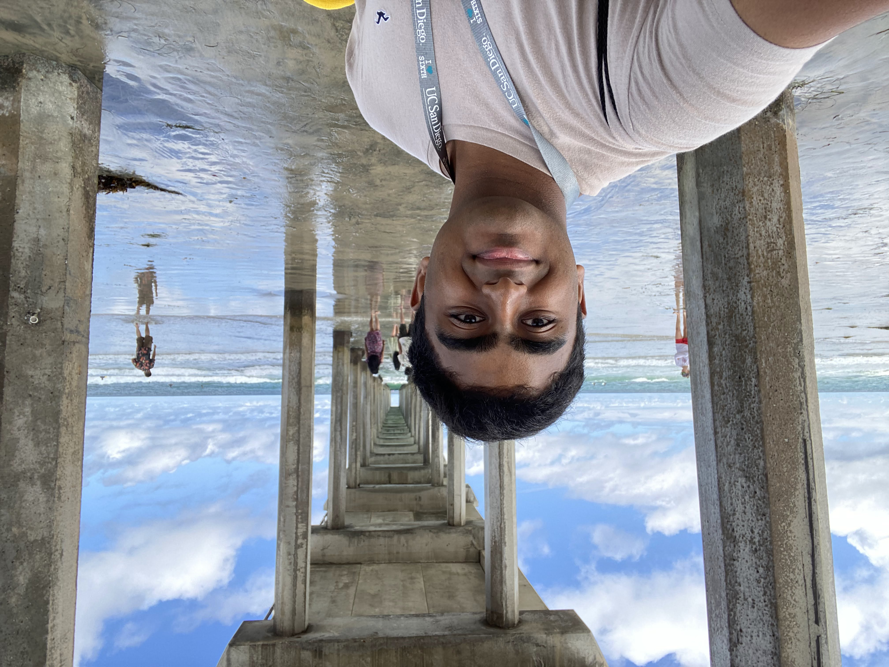

Hi! I'm Rakshan, a second-year Data Science major at UC San Diego with a minor in Business Analytics. I'm especially interested in how data can inform strategic product decisions! Either through research, projects, or classwork, I enjoy delving into real-world challenges and finding patterns that help inform successful solutions. I'm also involved in the Product Management Club and Data Science Student Society, hoping to bridge product and data to encourage analytical business thinking in myself and others!
